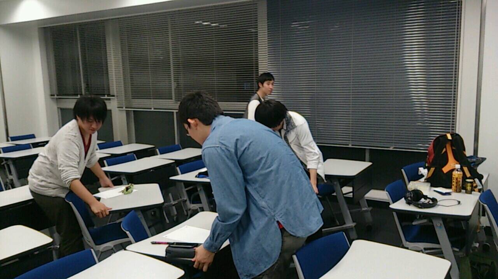
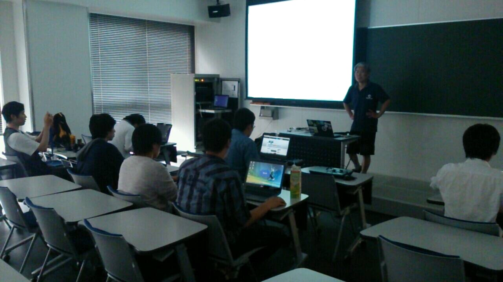

本日は情報通信研究プロジェクト初の講義イベント
その初めての講師としてNPO法人日本Androidの会に所属する、今岡工学事務所の今岡 通博氏にお越し頂きました。
なんとはるばる四国の松山からきて頂きました！
今回は翌日に
ワイヤレスジャパン2014のイベントがあるということで無線関係、Ｏ２Ｏ技術についてお話頂きました。

各自、勉強する場を整えます。

技術に関心の強いメンバーなので、当然ながらとても集中して聞いています。
講義内容としては音やエナジーハーベスト，UHF微弱電波の原理について。
また、それを使ってどのようなことができるのかを教わりました。
そして講義を聞いたあとは実践につなげるためのアイディアソン！
４人２グループに別れてアイディアを出し合いました。
初めてのアイディアソンとなり、アイディア出しに苦戦していましたが、最後は１人１つ以上のアイディアを考え・発表しました。
今回ご講演頂いたスライド概要はコチラです。